A few years ago, I discovered r/FridgeDetective,1 a community on reddit where members would post pictures with the contents of their fridges. Others would then guess the type of person the original poster would be, based on its contents.(fig. 1 - 3) It was after following the community for a while, that I became fascinated. Not in the people showing of their produce, but in what their refrigerators would be feeling.
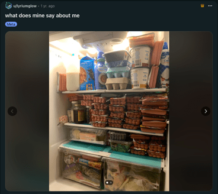
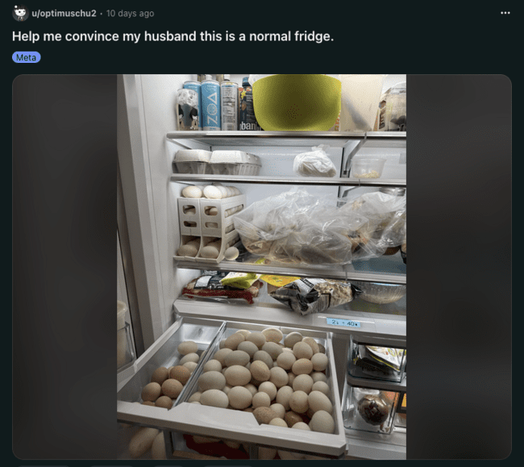
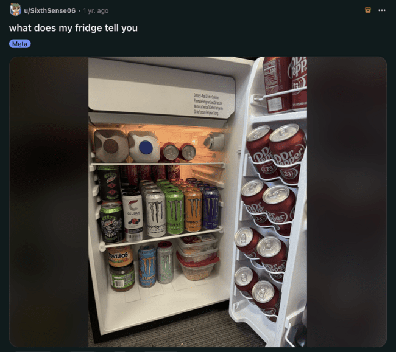
Fig. 2 — u/optimuschu2, Help me convince my husband this is a normal fridge, 2026, r/FridgeDetective
Fig. 3 — u/SixthSense06, what does my fridge tell you, 2025, r/FridgeDetective
I’ve looked for contact outside of other people since my childhood. Being diagnosed with autism at an early age, I’ve struggled with social interaction for a long time. This difficulty in relating to other people made me look elsewhere for connection, which I found in fantasy & science-fiction writing, our home computer, a large amount of LEGOs, and the nature around me. Looking back at my childhood, it is no surprise to me that an interest in things has become an important part to my artistic practice. Following this might also explain my interest in the philosophical field of object-oriented ontology (OOO). I like how blogger Philosophical Bachelor describes the field in their aptly titled post “Object Oriented Ontology” (2024):
A good way to begin to understand what OOO is about is to examine its three terms. By object, things are meant, just any object at all. By oriented, it means that the theories of OOO are centered around the object and not upon for instance, the observer of the object. As for ontology, it is a branch of metaphysics. Metaphysics studies the nature of reality while ontology is narrower, focusing on the nature of being, or the nature of what exists, of things. Hence, the main idea behind OOO is to take the status of objects seriously,2
Or the way American writer and artist Ian Bogost explains it in his blog: “Ontology is the
philosophical study of existence. … [OOO] puts things at the center of this
study.”3
Thinking about the world in an object-oriented way means giving objects the respect they
deserve, considering that humans are not different from, or above other entities.4
Another American writer, Matthew Overstreet, is not convinced by this object-oriented mode of thinking, however. After reading Ian Bogost’s book about object-oriented ontology, Alien Phenomenology, or What It’s Like to Be a Thing (2012), Overstreet comments on it in his blog:
The best metaphor to describe his [Bogost’s] position, it seems to me, is that of the autistic. The object-oriented thinker is he or she who is able to tune out the messy, noisy world of human affairs and focus solely, engaged in rapt wonder, on the garbage truck or video game.5
With his remark about autism, Overstreet means to discredit OOO in favor of attunement, as later in the same blog he writes:
As for me, I like things, but I’m first and foremost interested in attunement. As an ideal, attunement demands openness to the subjective experience of others. This openness is achieved through attention to the affective, the embodied. … Under the ontology I propose, being is relative— it’s based on context and positioning. It’s determined not by things-in-themselves, but things-in-relation.6
The Cambridge Dictionary defines the word attune as: “to make someone able to understand or recognize something.”7 Its noun form, attunement, can then be interpreted as the process of recognizing and understanding. Knowing this, I personally don’t find that OOO and attunement have to contradict each other. And when applied in the context of art, they even feel complementary. Attunement in this artistic context could mean something like researchers Julian Brigstocke and Tehseen Noorani describe in their article “Posthuman Attunements”: a calibration of our bodies as an instrument, a tuning in and tuning out,8 a capacity to be affected by our environment9 and “a form of embodied relationality, akin to something like empathy”10
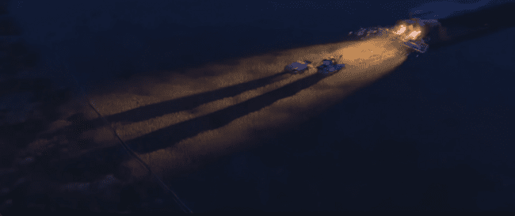
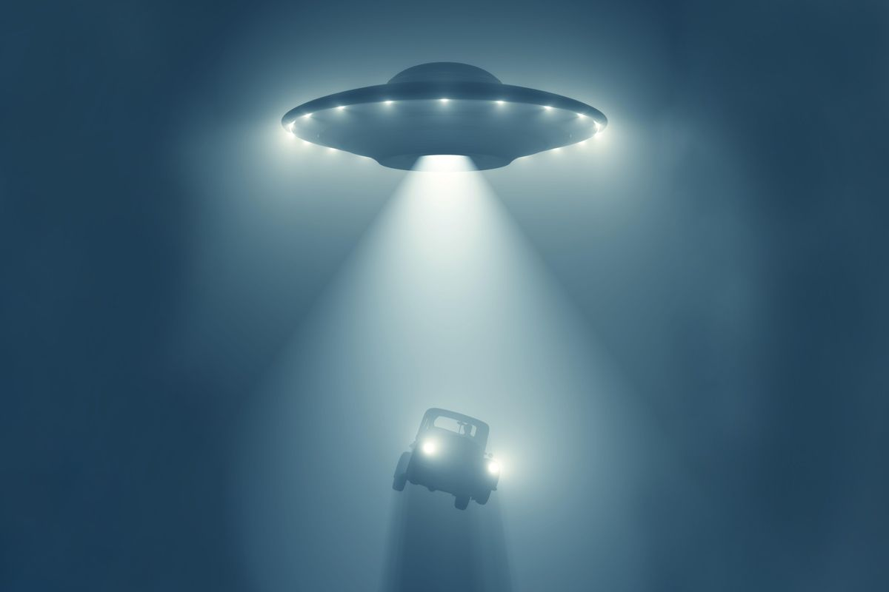
In my own practice I alternate between modes of OOO and attunement. I get fixated on an object or thing and start to enter into what British philosopher Timothy Morton would call the objects attunement space11. They describe the power of this attunement space in their chapter “Attunement” in Veer Ecology (2017) as: “being dragged by its tractor beam into its orbit.”12 (fig. 4 - 5)
It is this combination of attunement and object-oriented ways of thinking that I will explore in my thesis. Working with techniques and materials like 3D printing, programming, custom electronics, aluminum extrusion and generative sound in my practice, I want to apply the ways of thinking that OOO and attunement inspire to technology as a medium. Having recognized this as an important part of my artistic practice, I want to deepen my understanding of the ways we can make installations that explore the experiences of non-human entities. I’m interested in the ways technology can play a role in making these experiences accessible to humans and how technology can become a non-human entity in its own right as well. I want to ask:
How can technologically mediated artistic practices cultivate attunement with non-human others, and what can we discover by doing so?
I will look for an answer through three chapters, with the help of three non-human others. I will hug a pigeon, lift a stone, and open a fridge. And I’d like for you to come along.
Hug a Pigeon
Why should we consider the other?
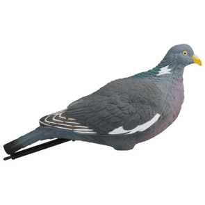
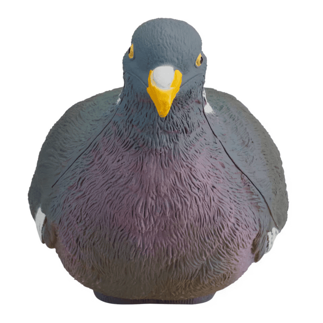
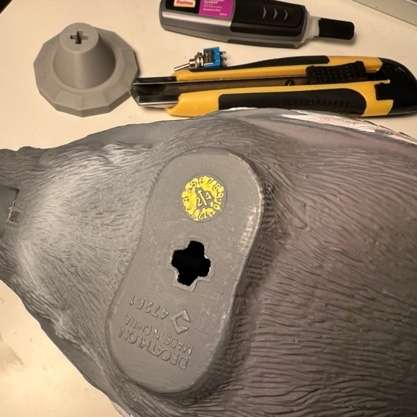
According to the molded markings on its plastic bottom, the first fake pigeon I got was manufactured somewhere in May of 2024.(fig. 6 - 7)
While browsing sporting goods retailer Decathlon’s website for something unrelated to birds, a plastic pigeon just appeared in my recommended purchases. It seemed like an odd thing for a sports company to be selling. Only after learning about the object’s intended use in hunting, did things start to make sense to me. These pigeons were intended to be put in a field, in groups of around 15-3013, to attract, shoot and kill their real-life counterparts. Once I knew this, the plastic birds wouldn’t leave my mind anymore.
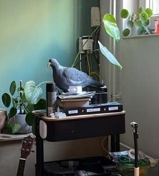
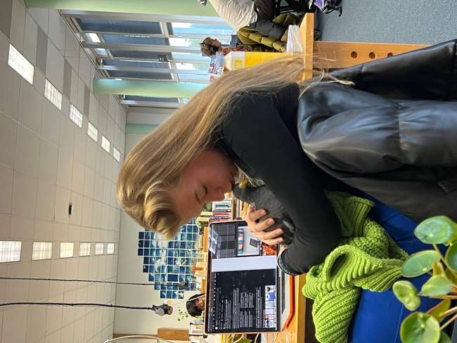
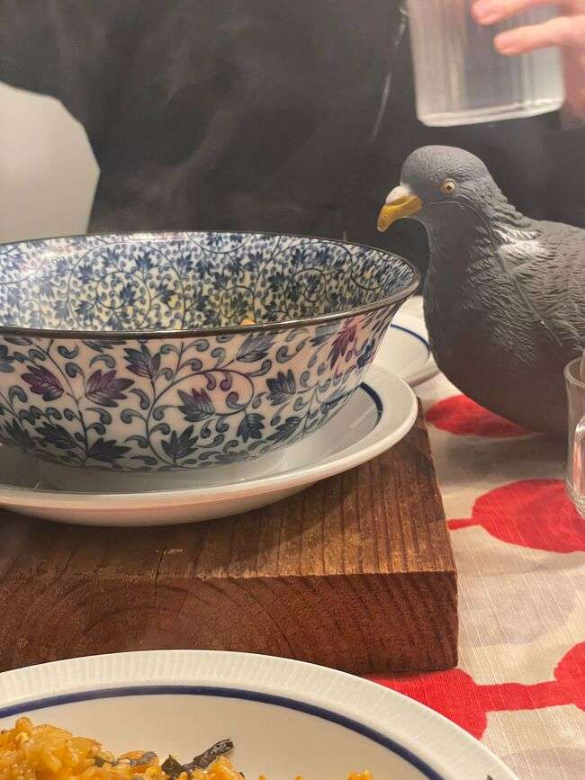
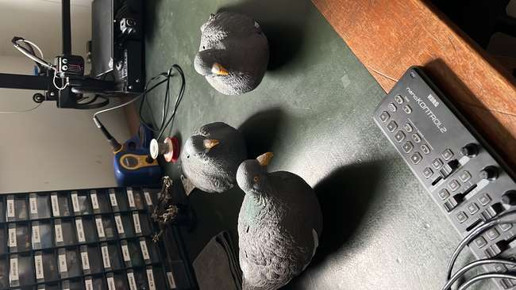
I ended up buying the fake pigeon in September 2024, not with the intention of killing, but for creative purposes. I wanted to use it in a project about artificial creatures, which did not work out in the end. And so, the pigeon sat on my desk, got moved around my house, occupying many different places and interacting with many different friends, for well over a year.(fig. 8) Most of my friends became empathetic to the plastic pigeon, and started to greet him, considering him to be almost like my pet.
It reminded me of Thomas Nagel’s 1974 paper “What Is It Like to Be a Bat?” in which he, logically, wonders what it is like to be a bat.14 Through the exploration of this thought, Nagel argues about the nature of consciousness. He states: “the fact that an organism has conscious experience at all means, basically, that there is something it is like to be that organism”15 and later on:
In so far as I can imagine this [what it is like to be a bat] (which is not very far), it tells me only what it would be like for me to behave as a bat behaves. But that is not the question. I want to know what it is like for a bat to be a bat.16
Nagel wants to emphasize that it is not possible for us to think in terms outside of our human, and even our individual, ways of experiencing the world. The subjective experience of the bat will always be inaccessible to us, simply because we are not bats.
But my biggest interest is not in this philosophical debate about consciousness; I'm more interested in the new insights thinking about others in this way could give us. And while Nagel speaks only of other organisms, I believe it to be important to extend a curiosity about subjective experience to all other entities, alive or not. I want to apply this curiosity to object-oriented ontology. What would it mean, to think about a what it’s like for the plastic pigeon on my desk?
In their book Ways of Being: Animals, Plants, Machines: The Search for a Planetary Intelligence (2023) British artist and writer James Bridle states:
Even those worlds in which we do not participate add to the totality of sensations and experiences which form the living, teeming earth, and on which we live and depend.
The very existence of other worlds, of numerous overlapping worlds in which many kinds of things and many ways of seeing and being are possible, should thrill us.17
Or as American academic Steven Shapiro describes it in his book Discognition (2016):
The nonhuman entities with which we share the world … are active in their own right … automobiles, computers, and kidney dialysis machines were made to serve particular human needs; but in turn, they also induce human habits and behaviors to change. Nonhuman things must therefore be seen as … active agents with their own intentions and goals, and which affect one another, as well as affecting us.18
There are other worlds on this earth, both natural and technological, that we have no access to, that still influence us. Asking questions about these worlds and their inhabitants, be they alive or not, should indeed excite us. Allowing ourselves to wonder about the lives of nonhuman others would enable us to gain a certain recognition of them. Recognizing them would allow us to tell larger stories, to imagine more and different ways of being, and to acknowledge the influence of our more-than-human world.19 Then, after we start to recognize, freed from our own anthropocentric worldview, we could start to exchange. We could extend our known range of subjectivities,20 or in other words; we could get familiar with a wider range of subjective ways the world can be experienced. It is as Belgian philosopher of science Vinciane Despret writes in her article “The Becomings of Subjectivity in Animal Worlds” (2008):
This extension of subjectivities … resembles what can be called intersubjectivity: becoming what the other suggests to you, accepting a proposal of subjectivity, acting in the manner in which the other addresses you, actualizing and verifying this proposal, in the sense of rendering it true.21
Embracing intersubjectivity would mean accepting this invitation of the other, an invitation to become something more than we currently are.
Doing so, would allow us to experience the richness of these other subjectivities. I think of the way American science fiction writer Ursula Le Guin describes it in her short story “The Author of the Acacia Seeds. And Other Extracts from the Journal of the Association of Therolinguistics” (1974). This fictional journal for therolinguistics, Le Guin’s name for the study of nonhuman languages, contains an article urging scientists to join an expedition with the goal of studying the language of the emperor penguin. In the article, the author describes the work that has already been done in studying the language of penguins:
Only when Professor Duby reminded us that penguins are birds, that they do not swim but fly in water, only then could the therolinguist begin to approach the sea literature of the penguin with understanding; only then could the miles of recordings already on film be restudied and, finally, appreciated. 22
Later in the article the fruits of this labor are described:
the perseverance of the Ross Ice Barrier Literary Circle has been fully rewarded with such passages as "Under the Iceberg," from the Autumn Song—a passage now world famous in the rendition by Anna Serebryakova of the Leningrad Ballet. No verbal rendering [of the literature of the penguin] can approach the felicity of Miss Serebryakova's version. For, quite simply, there is no way to reproduce in writing the all-important multiplicity of the original text, so beautifully rendered by the full chorus of the Leningrad Ballet company.23
Wouldn’t it be beautiful to experience the ballet of the penguin? The humor of the automobile? Or the embrace of the plastic pigeon?
Lift a Stone
What can fiction do that we cannot?
Before anything resembling life emerged, stone was already long present. We have shared the earth for a very long time, and humans have a special relationship with the pebbles, boulders, rocks and mountains around them. As American writer and researcher Ami Ronnberg phrases it in The Book of Symbols (2010):
Our relationship with stone is so ancient and intimate that we have named the beginning of human history the Stone Age. … in fact, it was this act … of turning stone into symbol - that made our earliest ancestors fully human.24
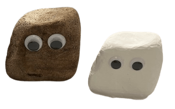
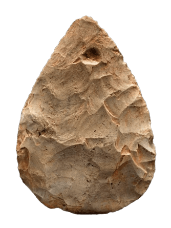
Fig. 10 — Stone European Handaxe, around 250.000 years old, Smithsonian National Museum of History
But this bond has mostly been very one sided. This makes sense, it is as Le Guin writes: “Ourselves animals, active, predators, we look (naturally enough) for an active, predatory, communicative art; and when we find it, we recognize it.”25 So, when we encounter the stone, this passive, wholly atemporal and cold26 being, we don’t communicate. We impose our own meanings and create our own fictional narratives. We create the stories that fit with our own ways of being. I’d say this isn’t negative; we can only relate to the world through our own active and communicative anthropomorphism.(fig. 9)
We should, however, question the questions we ask with our stories. Most often, we think of the world in an anthropocentric way. We place ourselves above all other entities. We often think of earth as inert matter, as something to be turned into raw material for the production of artefacts.27 “This began very early on with the stones we broke, cut and polished; with the bones we carved and shaped.”28 We lift the stone to smash it down again, chipping away at it, to make a tool.(fig. 10) I wonder what would happen when we lift the stone, not to break it, but to look at it. When we attempt to get closer to it and become it.
Maybe the attempt will be similar as in Conversation with a Stone, a poem written by Polish essayist and poet Wisława Szymborska’s in 1998:
’I knock at the stone’s front door.
“It’s only me, let me come in.”
“I don’t have a door,” says the stone.’ 29
And indeed, the stone doesn’t have a door. It is not able to speak to us in a familiar
language. But I don’t find this a reason to ignore it. I want to become a
geolinguist.30
I want to try and imagine the inner subjective experience of the stone. There is an
importance to do so, as American feminist and philosopher of science Donna Haraway explains
in her book Staying with the Trouble (2016):
It matters what thoughts think thoughts. It matters what knowledges know knowledges. It matters what relations relate relations. It matters what worlds world worlds. It matters what stories tell stories.31
The stories we tell create the worlds we inhabit. We have a need for fiction to tell the stories of those that can’t speak themselves. It is through fiction that we form our modes of thinking; it is how we establish our ethical values and decide which things we deem to be important. Fiction is both the way we could let the non-human speak, and the way in which we already create culture and society. Once we realize this, it becomes important to consider telling the stories of non-human others, like the rock.
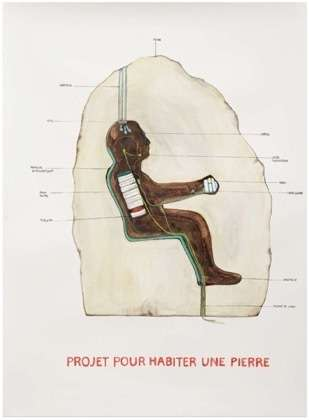
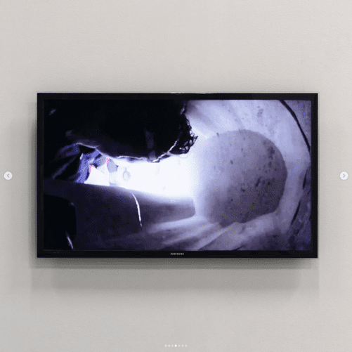
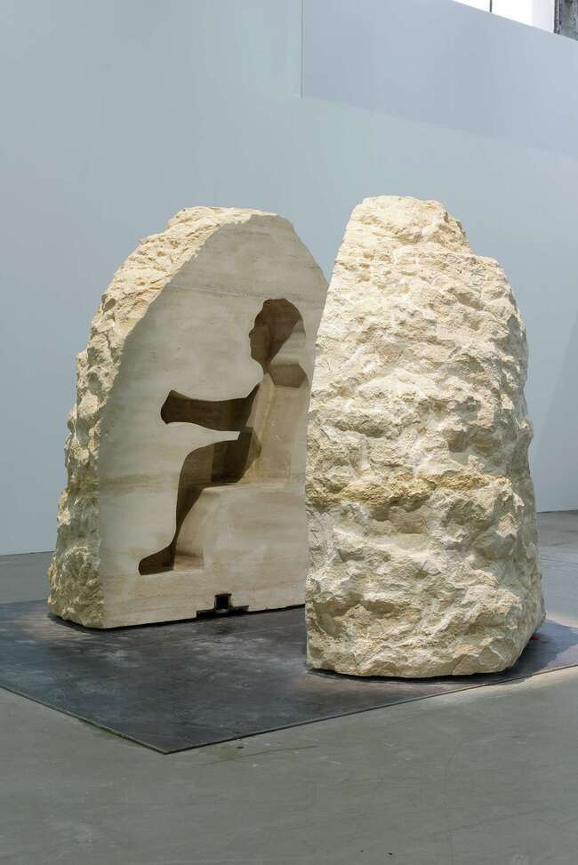
French performance artist Abraham Poincheval, who is interested in “living within a sculpture, becoming one with it as an object”32 tried to commune with a rock in his 2017 performance Pierre (French for stone). For this performance, he spent a full week living inside a silhouette shaped cutout in a large limestone rock.(fig. 11 – 13)
Just before being enclosed, Poincheval said: “[The rock’s] dampness will be in permanent contact with me. It will act on me, just as I will act on it. There will be an exchange of information between the rock and me, while I’m living inside it.”33 When interviewed three days into the performance he said: ““I do not feel oppressed (by the rock), I feel completely at ease, in real connection with it.”34
This might be the most literal way to try and connect with a rock. And what did it do?
Did Poincheval gain any insights into the experiential world of the stone? I would argue he
didn’t. I think he gained only insights into being in a small, enclosed space for a prolonged
time. How does sitting in a rock feel like actually being a rock?
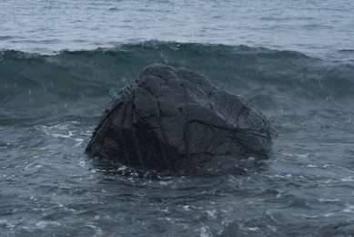
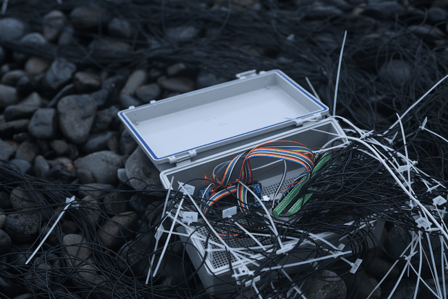
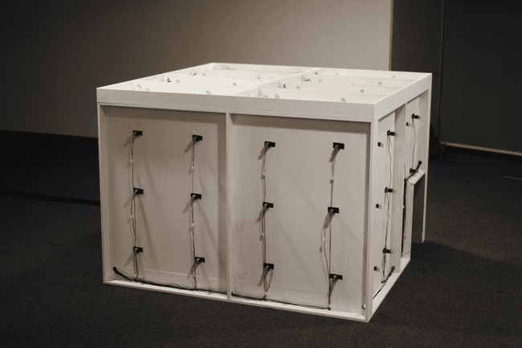
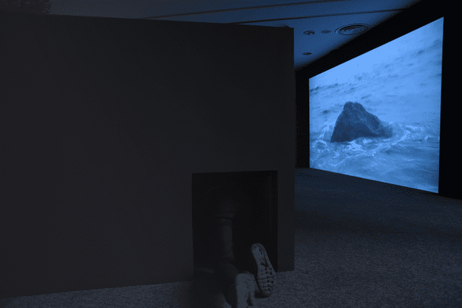
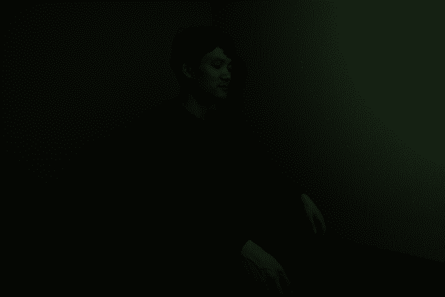
The shortcomings of Poincheval’s method become clear to me, when I compare it to another artwork that seeks to explore the inner world of stone, Shinseungback Kimyonghun’s 2017 installation Stone.(fig. 14)
For her work, Kimyonghun created an interface using water sensors that collected the data of waves hitting a rock on the shore of Ulleungdo, a volcanic island in South-Korea.35 The collected data was translated into sound and vibration using solenoids that were mounted on a wooden structure. This structure was presented alongside video recordings of the corresponding waves hitting the stone. Visitors could, as Kimyonghun described it, “Come in, and become the stone.”36
I find that Stone creates a more immersive experience than Pierre.
In Pierre, visitors were left to make speculations on what it would be like, to live
in this rock. Both through documentation and video Poincheval creates a narrative that is not
about the rock, but about himself, falling into the anthropocentric trap.
While in Stone, the experience is created by a technological system. It is
accessible to all visitors and acts on not just the imagination, but on sensorial
stimuli.
I find this to be a better way of translating an experience. While imagining can be
powerful, there is still the barrier of consciousness. We think we understand the imagined
experience, but we do so through our own human thoughts. When we create interactive systems
that act on our senses, we tap into a more subconscious way of relating. It is in this way,
that we can make fiction stories into experiences we can feel.
I believe that it is through these moments of feeling, not thinking, that we actually start
to recognize and consider the more-than-human world.
Open a Fridge
How can technology connect us?
In “The Unseen”, a chapter of American music producer Rick Rubin’s book The Creative Act: A Way of Being, he writes: “By conventional definition, the purpose of art is to create physical and digital artifacts.”37, “What we create allows us to share glimpses of an inner landscape, one that is beyond our understanding. Art is our portal to the unseen world.”38
I find that these two statements manage to describe my own artistic practice quite well. I am interested in making artifacts, both physical and digital. With these artifacts I hope to expose inner landscapes, to create portals to unseen worlds, to share the ways I think other non-humans could be experiencing the world. I’m inspired by Ian Bogost’s writing in “Carpentry”, the sixth chapter of Alien Phenomenology. In it, he describes carpentry as the “practice of constructing artifacts as a philosophical practice.”39 This concept of carpentry relates to my own interest in the philosophical ideas of OOO and attunement. I also want to explore these ideas through the making of artifacts. Bogost describes that: “One form of carpentry involves constructing artifacts that illustrate the perspectives of objects.”40 It is this form I’m most interested in. I want to make art that attempts to make non-human subjective experiences accessible.
In “What Is It Like to Be Bat?”, Nagel makes a remark about imagination:
It may be easier than I suppose to transcend inter-species barriers with the aid of the imagination. For example, blind people are able to detect objects near them by a form of sonar, using vocal clicks or taps of a cane. Perhaps if one knew what that was like, one could by extension imagine roughly what it was like to possess the much more refined sonar of a bat.41
Following this remark, I would argue that we can use technology as a tool to try and dissolve these inter-species barriers. Just as the blind person uses vocal clicks or cane taps to approach the sonar of the bat, artists can utilize the capabilities of technology to approach other ways of being. Keeping in mind that this will always be an attempt.
We can use water sensors like Kimyonghun did in Stone and translate the data into vibration and sound. We can also take inspiration from American artist David Bowen, who makes kinetic, robotic, interactive and data driven sculptures.42 In his work cloud piano (2014), a piano is played by the shapes and movement of the clouds. A camera is pointed at the sky, and its video output is translated into robotic keypresses and sound.(fig. 15) In plant machete (2022), a robotic arm holding a machete is controlled by a plant. The bioelectric signals of the plant’s leaves are measured and translated into the movement of the industrial robot.(fig. 16)
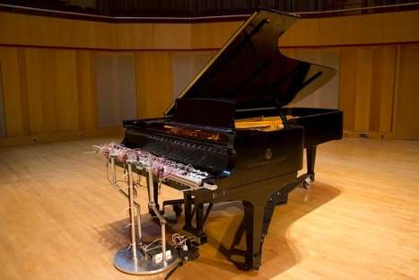
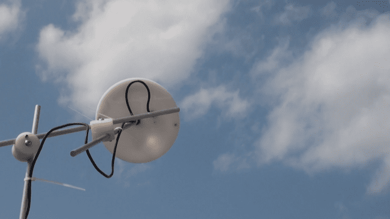
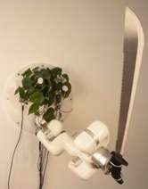
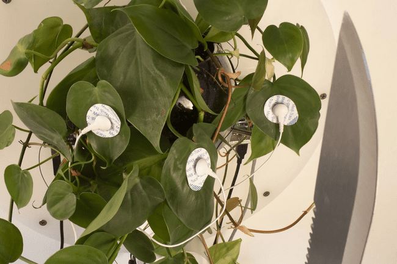
In tele-present wind (2018), 126 mechanical devices with plant stalks are controlled by a singular other stalk connected to an accelerometer. When the wind blows, this stalk moves and the environmental wind data is translated into the physical movement of the 126 devices.(fig. 17)
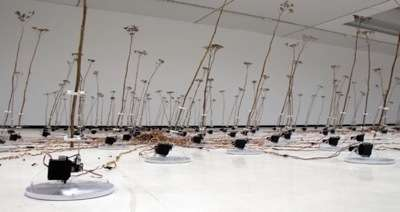
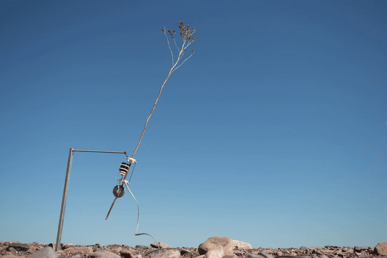
In the work of Bowen, we can find what artist-researchers Juan Duarte Regino and Sebastián Lomelí Bravo describe in their 2024 paper “Environmental Attunement as a Strategy for Ecological Engagement”:
[The] concept of the apparatus as a mediator for multispecies and environmental media communication. … [emphasizes] the constructed and mediated nature of these interactions. It underscores the role of technology as an active participant in shaping the possibilities for multispecies engagement.43
When using technology to make art, we create systems. These systems, or apparatuses, are intermediaries between us and the other. It is the interface in-between. The apparatus shapes the way we can interact. Take plant machete and imagine the signals from the plant not translating into movement, but into pixels on a screen. Instead of the tangible danger of the machete prompting us to keep our distance, we see an image and might try and come closer.
We should be aware of the fact that apparatuses are constructed intermediaries. The ways in which we design them have meaningful consequences for the experiences, artefacts or installations they become a part of. But this is not a bad thing, as it is only through these mediations, the translation technology allows us to make, that we are able to make fiction narratives into experiences that can affect us.
When we use technology in this way, the apparatus is an active participant. As Bridle writes in Ways of Being: “‘we shape our tools, and thereafter our tools shape us.’ … Our tools have agency, and thus a claim upon the more-than-human world as well.”44 The technologies we use for translation, become non-humans in their own right.
This claim of technology upon the more-than-human world is apparent in GreenScreenRefrigerator by British contemporary video artist Mark Leckey.45
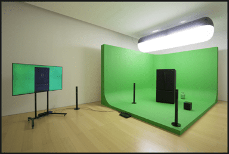
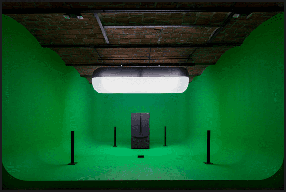
GreenScreenRefrigerator was uploaded to YouTube in two parts.46 In both videos a Samsung refrigerator stands in front of a green screen while questioning its own existence. (fig. 18) Images of other adjacent objects are overlaid, while the refrigerator monologues:
Standing here, here standing here, standing here, beside myself, out of my mind, out of my mind. I liken myself to other things: a dark mirror, a walled garden, a monstrous insect, a Spearmint Rhino, the staff of Hermes, a black sun rising, pylon, four cornerings, four sidings, my measurings, my station.47
A few years ago, I wondered what my refrigerator would be feeling. What it would be like to be my fridge. But maybe we shouldn’t open the fridge ourselves, but acknowledge it as a non-human other, so that it, through its own apparatus, can open up to us.
Sitting amongst acquaintances
Conclusion
In her article “Making and embedding humane technologies”, assistant professor in philosophy of technology Janna van Grunsven writes:
artistic practices share something noteworthy with engineering practices that philosophy lacks, namely a focus on transforming the concrete material environment. By the same token, artistic practices also share something with philosophy that engineering practices typically lack, namely a tendency to critically interrogate our values, practices and habits. By sharing this critical attitude with philosophy and by sharing the focus on world-making with engineering, art thus affords a concrete yet reflective way of exploring and rethinking the possibilities that technological changes in our material environment may afford.48
I agree with van Grunsven. As an artist working with technology, I try and combine both critical philosophy and physical world making. I try to practice carpentry, in the way that Bogost described it, as the making of artefacts as philosophical practice.49 Not with the goal of only asking questions, but to create experiences that imagine more-than-human subjectivities.
As Bridle states in Ways of Being: “In order to change ourselves, to take on different ways of thinking about the world, we need new ways of seeing it.”50 Following my thesis I think that we can do so in three steps.
First, we need to hug the pigeon. Where we realize that if we accept the invitation of the more than human world, we expand the ways we can be in the world. It will allow us to tell bigger stories, with wider perspectives and with more non-human others.
Then we can lift the stone. Not to break it, but to get closer. It is here we realize the power of our storytelling, that fiction is the way we create culture, and how we decide on who gets heard.
From there we can open the fridge. Where we combine the embrace of the non-human other with the importance of fiction. It is where we make stories of other subjectivities into experiences, through the use of technology. Acting on our senses, instead of just imagination.
It is then, after we have done this work, that we can look up and find ourselves sitting in the world amongst acquaintances. Surrounded by non-human others that we might not fully know but have at least met.
Bibliography
”Attune.” April 1, 2026. https://dictionary.cambridge.org/dictionary/english/attune” target=”_blank”>https://dictionary.cambridge.org/dictionary/english/attune.
Bachelor, Philosophical. “Object Oriented Ontology.” Medium, January 30, 2024. https://medium.com/@philosophicalbachelor/object-oriented-ontology-b9744aad50b6” target=”_blank”>https://medium.com/@philosophicalbachelor/object-oriented-ontology-b9744aad50b6.
Bogost, Ian. Alien Phenomenology, or What It’s Like to Be a Thing. Posthumanities 20. University of Minnesota press, 2012.
Bogost, Ian. What Is Object-Oriented Ontology? 2009. https://bogost.com/writing/blog/what_is_objectoriented_ontolog/.
Bowen, David. “David Bowen Art.” David Bowen. Accessed April 7, 2026. https://www.dwbowen.com.
Bridle, James. Ways of Being: Animals, Plants, Machines: The Search for a Planetary Intelligence. Penguin books, 2023.
Brigstocke, Julian, and Tehseen Noorani. “Posthuman Attunements: Aesthetics, Authority and the Arts of Creative Listening.” GeoHumanities, May 19, 2016, 1–7. https://doi.org/10.1080/2373566X.2016.1167618.
Decathlon. “LOKDUIF 3D 500 | Decathlon.” Accessed March 21, 2026. https://www.decathlon.nl/p/lokduif-3d-500/328260/m8602880.
Despret, Vinciane. “The Becomings of Subjectivity in Animal Worlds.” Subjectivity 23, no. 1 (2008): 123–39. https://doi.org/10.1057/sub.2008.15.
Duarte Regino, Juan Carlos, and Sebastián Lomelí Bravo. “Environmental Attunement as a Strategy for Ecological Engagement.” April 1, 2024, 284–91. https://doi.org/10.14236/ewic/POM24.38.
France-Presse, Agence. “French Artist Living inside a Rock Surrounded by Excrement: ‘I Feel Completely at Ease.’” World News. The Guardian, February 26, 2017. https://www.theguardian.com/world/2017/feb/26/french-artist-living-inside-a-rock-surrounded-by-excrement-i-feel-completely-at-ease.
“Fridge Detective.” Accessed April 1, 2026. https://www.reddit.com/r/FridgeDetective/.
Guin, Ursula K. Le. The Author of the Acacia Seeds. And Other Extracts from the Journal of the Association of Therolinguistics. 1974.
Gurpinar, Avsar. “Towards an Object-Oriented Design Ontology.” Paper presented at DRS2022: Bilbao. June 25, 2022. https://doi.org/10.21606/drs.2022.728.
Haraway, Donna. Staying with the Trouble: Making Kin in the Chthulucene. Experimental Futures. Technological Lives, Scientific Arts, Anthropological Voices. Duke University Press, 2016.
Kimyonghun, Shinseungback. “Stone.” Accessed March 29, 2026. https://ssbkyh.com/works/stone/.
Lussault, Michel. “On Life With Non-Living.” In A BESTIARY OF THE ANTHROPOCENE, edited by Nicolas Nova and DISNOVATION.ORG. Onomatopee, 2021. 2nd ed. Set Margins’, 2023.
Mark Leckey. GreenScreenRefrigerator Part I. 2010. 9:10. https://www.youtube.com/watch?v=8X1QkseVjIY.
Mark Leckey. GreenScreenRefrigerator Part II. 2010. 7:58. https://www.youtube.com/watch?v=xiSXtFK8G58.
Morton, Timothy. “Attune.” In Veer Ecology, edited by Jeffrey Jerome Cohen and Lowell Duckert. University of Minnesota Press, 2017.
Nagel, Thomas. “What Is It Like to Be a Bat?” The Philosophical Review 83, no. 4 (1974): 435–50. https://doi.org/10.2307/2183914.
Overstreet, Matthew. Object-Oriented Ontology: Radical, Autistic or Both? July 16, 2016. https://mwover.com/2016/07/16/object-oriented-ontology-radical-autistic-or-both/.
Ronnberg, Ami, and Kathleen Rock Martín, eds. The Book of Symbols: Reflections on Archetypal Images. Taschen, 2010.
Rubin, Rick, and Neil Strauss. The Creative Act: A Way of Being. Penguin Press, 2023.
Shaviro, Steven. Discognition. Repeater Books, 2016.
The Museum of Modern Art. “Mark Leckey. GreenScreenRefrigerator. 2010 | MoMA.” Accessed April 8, 2026. https://www.moma.org/collection/works/221829.
Van Grunsven, Janna Bertchen. “Making and Embedding Humane Technologies: Can Artistic Practices Provide Normative Guidance?” Adaptive Behavior 30, no. 6 (2022): 569–71. https://doi.org/10.1177/1059712321995229.
Venturi, Riccardo. “Pierre.” Artforum, June 1, 2017. https://www.artforum.com/events/abraham-poincheval-231269/.
-
↩︎
“Fridge Detective,” accessed April 1, 2026, https://www.reddit.com/r/FridgeDetective/.
-
↩︎
Philosophical Bachelor, “Object Oriented Ontology,” Medium, January 30, 2024, https://medium.com/@philosophicalbachelor/object-oriented-ontology-b9744aad50b6.
-
↩︎
Ian Bogost, What Is Object-Oriented Ontology?, 2009, https://bogost.com/writing/blog/what_is_objectoriented_ontolog/.
-
↩︎
Avsar Gurpinar, “Towards an Object-Oriented Design Ontology,” paper presented at DRS2022: Bilbao, June 25, 2022, 11, https://doi.org/10.21606/drs.2022.728.
-
↩︎
Matthew Overstreet, Object-Oriented Ontology: Radical, Autistic or Both?, July 16, 2016, https://mwover.com/2016/07/16/object-oriented-ontology-radical-autistic-or-both/.
-
↩︎
Overstreet, Object-Oriented Ontology.
-
↩︎
“Attune,” April 1, 2026, https://dictionary.cambridge.org/dictionary/english/attune.
-
↩︎
Julian Brigstocke and Tehseen Noorani, “Posthuman Attunements: Aesthetics, Authority and the Arts of Creative Listening,” GeoHumanities, May 19, 2016, 2, https://doi.org/10.1080/2373566X.2016.1167618.
-
↩︎
Brigstocke and Noorani, “Posthuman Attunements,” 3.
-
↩︎
Brigstocke and Noorani, “Posthuman Attunements,” 3.
-
↩︎
Timothy Morton, “Attune,” in Veer Ecology, ed. Jeffrey Jerome Cohen and Lowell Duckert (University of Minnesota Press, 2017), 153.
-
↩︎
Morton, “Attune,” 162.
-
↩︎
Decathlon, “LOKDUIF 3D 500 | Decathlon,” accessed March 21, 2026, https://www.decathlon.nl/p/lokduif-3d-500/328260/m8602880.
-
↩︎
Thomas Nagel, “What Is It Like to Be a Bat?,” The Philosophical Review 83, no. 4 (1974): 435–50, https://doi.org/10.2307/2183914.
-
↩︎
Nagel, “What Is It Like to Be a Bat?,” 436.
-
↩︎
Nagel, “What Is It Like to Be a Bat?,” 439.
-
↩︎
James Bridle, Ways of Being: Animals, Plants, Machines: The Search for a Planetary Intelligence (Penguin books, 2023), 68.
-
↩︎
Steven Shaviro, Discognition (Repeater Books, 2016), 46–47.
-
↩︎
Bridle, Ways of Being, 11.
-
↩︎
Vinciane Despret, “The Becomings of Subjectivity in Animal Worlds,” Subjectivity 23, no. 1 (2008): 135, https://doi.org/10.1057/sub.2008.15.
-
↩︎
Despret, “The Becomings of Subjectivity in Animal Worlds,” 135.
-
↩︎
Ursula K. Le Guin, The Author of the Acacia Seeds. And Other Extracts from the Journal of the Association of Therolinguistics, 1974, 3.
-
↩︎
Guin, The Author of the Acacia Seeds. And Other Extracts from the Journal of the Association of Therolinguistics, 3.
-
↩︎
Ami Ronnberg and Kathleen Rock Martín, eds., The Book of Symbols: Reflections on Archetypal Images (Taschen, 2010), 104.
-
↩︎
Guin, The Author of the Acacia Seeds. And Other Extracts from the Journal of the Association of Therolinguistics, 5.
-
↩︎
Guin, The Author of the Acacia Seeds. And Other Extracts from the Journal of the Association of Therolinguistics, 5.
-
↩︎
Michel Lussault, “On Life With Non-Living,” in A BESTIARY OF THE ANTHROPOCENE, ed. Nicolas Nova and DISNOVATION.ORG (Onomatopee, 2021; 2nd ed., Set Margins’, 2023), 219.
-
↩︎
Lussault, “On Life With Non-Living,” 219.
-
↩︎
Ronnberg and Martín, The Book of Symbols, 104.
-
↩︎
Guin, The Author of the Acacia Seeds. And Other Extracts from the Journal of the Association of Therolinguistics, 5.
-
↩︎
Donna Haraway, Staying with the Trouble: Making Kin in the Chthulucene, Experimental Futures. Technological Lives, Scientific Arts, Anthropological Voices (Duke University Press, 2016), 35.
-
↩︎
Riccardo Venturi, “Pierre,” Artforum, June 1, 2017, https://www.artforum.com/events/abraham-poincheval-231269/.
-
↩︎
Venturi, “Pierre.”
-
↩︎
Agence France-Presse, “French Artist Living inside a Rock Surrounded by Excrement: ‘I Feel Completely at Ease,’” World News, The Guardian, February 26, 2017, https://www.theguardian.com/world/2017/feb/26/french-artist-living-inside-a-rock-surrounded-by-excrement-i-feel-completely-at-ease.
-
↩︎
Shinseungback Kimyonghun, “Stone,” accessed March 29, 2026, https://ssbkyh.com/works/stone/.
-
↩︎
Kimyonghun, “Stone.”
-
↩︎
Rick Rubin and Neil Strauss, The Creative Act: A Way of Being (Penguin Press, 2023), 25.
-
↩︎
Rubin and Strauss, The Creative Act, 25.
-
↩︎
Ian Bogost, Alien Phenomenology, or What It’s Like to Be a Thing, Posthumanities 20 (University of Minnesota press, 2012), 92.
-
↩︎
Bogost, Alien Phenomenology, or What It’s Like to Be a Thing, 109.
-
↩︎
Nagel, “What Is It Like to Be a Bat?,” 442.
-
↩︎
David Bowen, “David Bowen Art,” David Bowen, accessed April 7, 2026, https://www.dwbowen.com.
-
↩︎
Juan Carlos Duarte Regino and Sebastián Lomelí Bravo, “Environmental Attunement as a Strategy for Ecological Engagement,” April 1, 2024, 290, https://doi.org/10.14236/ewic/POM24.38.
-
↩︎
Bridle, Ways of Being, 18.
-
↩︎
“Mark Leckey. GreenScreenRefrigerator. 2010 | MoMA,” The Museum of Modern Art, accessed April 8, 2026, https://www.moma.org/collection/works/221829.
-
↩︎
Mark Leckey, GreenScreenRefrigerator Part I, 2010, 9:10, https://www.youtube.com/watch?v=8X1QkseVjIY; Mark Leckey, GreenScreenRefrigerator Part II, 2010, 7:58, https://www.youtube.com/watch?v=xiSXtFK8G58.
-
↩︎
Mark Leckey, GreenScreenRefrigerator Part I, at 2:12-3:20.
-
↩︎
Janna Bertchen Van Grunsven, “Making and Embedding Humane Technologies: Can Artistic Practices Provide Normative Guidance?,” Adaptive Behavior 30, no. 6 (2022): 1, https://doi.org/10.1177/1059712321995229.
-
↩︎
Bogost, Alien Phenomenology, or What It’s Like to Be a Thing, 92.
-
↩︎
Bridle, Ways of Being, 125.